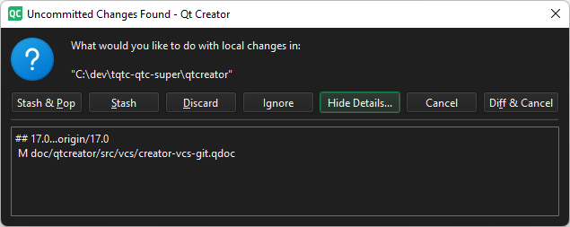

git pull
To pull changes from a remote repository, go to Tools > Git > Remote Repository and select Pull.
If you have modified files, you are asked how to handle them.
Manage uncommitted changes

You can apply the following actions to uncommitted changes:
| Menu Item | Description |
|---|---|
| Diff & Cancel | View a diff of the changes and cancel git pull. |
| Discard | Reset local changes and execute git pull. The changes will be lost. |
| Ignore | Execute git pull with local changes in the working directory. |
| Show/Hide Details | Show or hide details of the local changes. |
| Stash | Stash the local changes and execute git pull. |
| Stash & Pop | Stash the local changes, execute git pull, and then pop the changes. |
Pull with rebase
Go to Preferences > Version Control > Git, and then select Pull with rebase to perform a rebase operation while pulling.
See also How To: Use Git and Git.